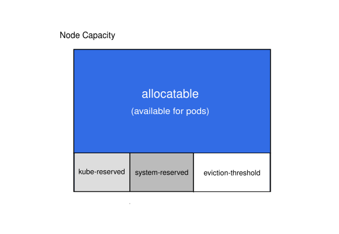

Kubernetes nodes can be scheduled to Capacity. Pods can
consume all the available capacity on a node by default. This is an
issue because nodes typically run quite a few system daemons that power
the OS and Kubernetes itself. Unless resources are set aside for these
system daemons, pods and system daemons compete for resources and lead
to resource starvation issues on the node.
The kubelet exposes a feature named 'Node Allocatable'
that helps to reserve compute resources for system daemons. Kubernetes
recommends cluster administrators to configure 'Node Allocatable' based
on their workload density on each node.
Before you begin
You need to have a Kubernetes cluster, and the kubectl command-line tool must be configured to communicate with your cluster. It is recommended to run this tutorial on a cluster with at least two nodes that are not acting as control plane hosts. If you do not already have a cluster, you can create one by using minikube or you can use one of these Kubernetes playgrounds:
You can configure below kubelet configuration settings using the kubelet configuration file.
Node Allocatable

'Allocatable' on a Kubernetes node is defined as the amount of compute resources that are available for pods. The scheduler does not over-subscribe 'Allocatable'. 'CPU', 'memory' and 'ephemeral-storage' are supported as of now.
Node Allocatable is exposed as part of v1.Node object in
the API and as part of kubectl describe node in the
CLI.
Resources can be reserved for two categories of system daemons in the
kubelet.
Enabling QoS and Pod level cgroups
To properly enforce node allocatable constraints on the node, you
must enable the new cgroup hierarchy via the cgroupsPerQOS
setting. This setting is enabled by default. When enabled, the
kubelet will parent all end-user pods under a cgroup
hierarchy managed by the kubelet.
Configuring a cgroup driver
The kubelet supports manipulation of the cgroup
hierarchy on the host using a cgroup driver. The driver is configured
via the cgroupDriver setting.
The supported values are the following:
cgroupfsis the default driver that performs direct manipulation of the cgroup filesystem on the host in order to manage cgroup sandboxes.systemdis an alternative driver that manages cgroup sandboxes using transient slices for resources that are supported by that init system.
Depending on the configuration of the associated container runtime,
operators may have to choose a particular cgroup driver to ensure proper
system behavior. For example, if operators use the systemd
cgroup driver provided by the containerd runtime, the
kubelet must be configured to use the systemd
cgroup driver.
Kube Reserved
- KubeletConfiguration Setting:
kubeReserved: {}. Example value{cpu: 100m, memory: 100Mi, ephemeral-storage: 1Gi, pid=1000} - KubeletConfiguration Setting:
kubeReservedCgroup: ""
kubeReserved is meant to capture resource reservation
for kubernetes system daemons like the kubelet,
container runtime, etc. It is not meant to reserve
resources for system daemons that are run as pods.
kubeReserved is typically a function of
pod density on the nodes.
In addition to cpu, memory, and
ephemeral-storage, pid may be specified to
reserve the specified number of process IDs for kubernetes system
daemons.
To optionally enforce kubeReserved on kubernetes system
daemons, specify the parent control group for kube daemons as the value
for kubeReservedCgroup setting, and add kube-reserved to
enforceNodeAllocatable.
It is recommended that the kubernetes system daemons are placed under
a top level control group (runtime.slice on systemd
machines for example). Each system daemon should ideally run within its
own child control group. Refer to the
design proposal for more details on recommended control group
hierarchy.
Note that Kubelet does not create
kubeReservedCgroup if it doesn't exist. The kubelet will
fail to start if an invalid cgroup is specified. With
systemd cgroup driver, you should follow a specific pattern
for the name of the cgroup you define: the name should be the value you
set for kubeReservedCgroup, with .slice
appended.
System Reserved
- KubeletConfiguration Setting:
systemReserved: {}. Example value{cpu: 100m, memory: 100Mi, ephemeral-storage: 1Gi, pid=1000} - KubeletConfiguration Setting:
systemReservedCgroup: ""
systemReserved is meant to capture resource reservation
for OS system daemons like sshd, udev, etc.
systemReserved should reserve memory for the
kernel too since kernel memory is not
accounted to pods in Kubernetes at this time. Reserving resources for
user login sessions is also recommended (user.slice in
systemd world).
In addition to cpu, memory, and
ephemeral-storage, pid may be specified to
reserve the specified number of process IDs for OS system daemons.
To optionally enforce systemReserved on system daemons,
specify the parent control group for OS system daemons as the value for
systemReservedCgroup setting, and add system-reserved to
enforceNodeAllocatable.
It is recommended that the OS system daemons are placed under a top
level control group (system.slice on systemd machines for
example).
Note that kubelet does not create
systemReservedCgroup if it doesn't exist.
kubelet will fail if an invalid cgroup is specified. With
systemd cgroup driver, you should follow a specific pattern
for the name of the cgroup you define: the name should be the value you
set for systemReservedCgroup, with .slice
appended.
Explicitly Reserved CPU List
Feature state:
Stable since Kubernetes v1.17
KubeletConfiguration Setting:
reservedSystemCPUs:. Example value 0-3
reservedSystemCPUs is meant to define an explicit CPU
set for OS system daemons and kubernetes system daemons.
reservedSystemCPUs is for systems that do not intend to
define separate top level cgroups for OS system daemons and kubernetes
system daemons with regard to cpuset resource. If the Kubelet
does not have kubeReservedCgroup and
systemReservedCgroup, the explicit cpuset provided by
reservedSystemCPUs will take precedence over the CPUs
defined by kubeReservedCgroup and
systemReservedCgroup options.
This option is specifically designed for Telco/NFV use cases where uncontrolled interrupts/timers may impact the workload performance. you can use this option to define the explicit cpuset for the system/kubernetes daemons as well as the interrupts/timers, so the rest CPUs on the system can be used exclusively for workloads, with less impact from uncontrolled interrupts/timers. To move the system daemon, kubernetes daemons and interrupts/timers to the explicit cpuset defined by this option, other mechanism outside Kubernetes should be used. For example: in Centos, you can do this using the tuned toolset.
Eviction Thresholds
KubeletConfiguration Setting:
evictionHard: {memory.available: "100Mi", nodefs.available: "10%", nodefs.inodesFree: "5%", imagefs.available: "15%"}.
Example value: {memory.available: "<500Mi"}
Memory pressure at the node level leads to System OOMs which affects
the entire node and all pods running on it. Nodes can go offline
temporarily until memory has been reclaimed. To avoid (or reduce the
probability of) system OOMs kubelet provides out
of resource management. Evictions are supported for
memory and ephemeral-storage only. By
reserving some memory via evictionHard setting, the
kubelet attempts to evict pods whenever memory availability
on the node drops below the reserved value. Hypothetically, if system
daemons did not exist on a node, pods cannot use more than
capacity - eviction-hard. For this reason, resources
reserved for evictions are not available for pods.
Enforcing Node Allocatable
KubeletConfiguration setting:
enforceNodeAllocatable: [pods]. Example value:
[pods,system-reserved,kube-reserved]
The scheduler treats 'Allocatable' as the available
capacity for pods.
kubelet enforce 'Allocatable' across pods by default.
Enforcement is performed by evicting pods whenever the overall usage
across all pods exceeds 'Allocatable'. More details on eviction policy
can be found on the node
pressure eviction page. This enforcement is controlled by specifying
pods value to the KubeletConfiguration setting
enforceNodeAllocatable.
Optionally, kubelet can be made to enforce
kubeReserved and systemReserved by specifying
kube-reserved & system-reserved values in
the same setting. Additionally, only compressible resources may be
enforced by specifying kube-reserved-compressible and
system-reserved-compressible. Note that to enforce
kubeReserved or systemReserved,
kubeReservedCgroup or systemReservedCgroup
needs to be specified respectively.
General Guidelines
System daemons are expected to be treated similar to Guaranteed
pods. System daemons can burst within their bounding control groups
and this behavior needs to be managed as part of kubernetes deployments.
For example, kubelet should have its own control group and
share kubeReserved resources with the container runtime.
However, Kubelet cannot burst and use up all available Node resources if
kubeReserved is enforced.
Be extra careful while enforcing systemReserved
reservation since it can lead to critical system services being CPU
starved, OOM killed, or unable to fork on the node. The recommendation
is to enforce systemReserved only if a user has profiled
their nodes exhaustively to come up with precise estimates and is
confident in their ability to recover if any process in that group is
oom-killed.
Enforcing only compressible resources for kubeReserved
and systemReserved is less likely to cause disruption while
ensuring that the resource is allocated appropriately when there is
contention.
- To begin with enforce 'Allocatable' on
pods. - Once adequate monitoring and alerting is in place to track kube and
system daemons, attempt to enforce compressible resources on
kubeReservedandsystemReserved. - Attempt to enforce non-compressible
kubeReservedresources based on usage heuristics. - If absolutely necessary, enforce non-compressible
systemReservedresources over time.
The resource requirements of kube system daemons may grow over time
as more and more features are added. Over time, kubernetes project will
attempt to bring down utilization of node system daemons, but that is
not a priority as of now. So expect a drop in Allocatable
capacity in future releases.
Example Scenario
Here is an example to illustrate Node Allocatable computation:
- Node has
32Giofmemory,16 CPUsand100GiofStorage kubeReservedis set to{cpu: 1000m, memory: 2Gi, ephemeral-storage: 1Gi}systemReservedis set to{cpu: 500m, memory: 1Gi, ephemeral-storage: 1Gi}evictionHardis set to{memory.available: "<500Mi", nodefs.available: "<10%"}
Under this scenario, 'Allocatable' will be 14.5 CPUs, 28.5Gi of
memory and 88Gi of local storage. Scheduler ensures that
the total memory requests across all pods on this node does
not exceed 28.5Gi and storage doesn't exceed 88Gi. Kubelet evicts pods
whenever the overall memory usage across pods exceeds 28.5Gi, or if
overall disk usage exceeds 88Gi. If all processes on the node consume as
much CPU as they can, pods together cannot consume more than 14.5
CPUs.
If kubeReserved and/or systemReserved is
not enforced and system daemons exceed their reservation,
kubelet evicts pods whenever the overall node memory usage
is higher than 31.5Gi or storage is greater than 90Gi.